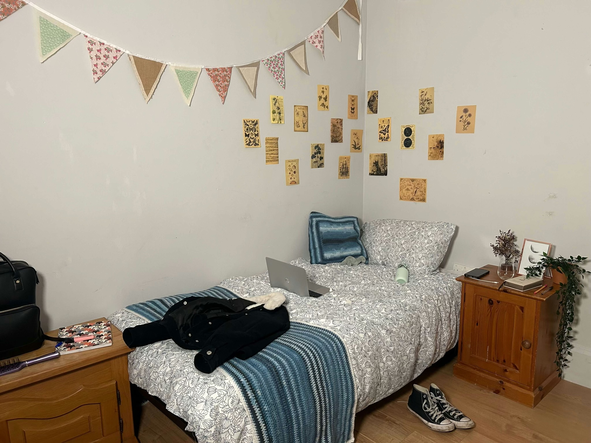
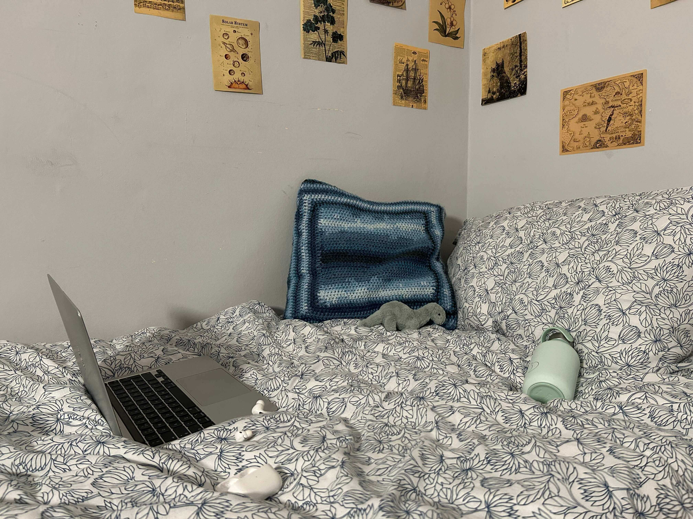
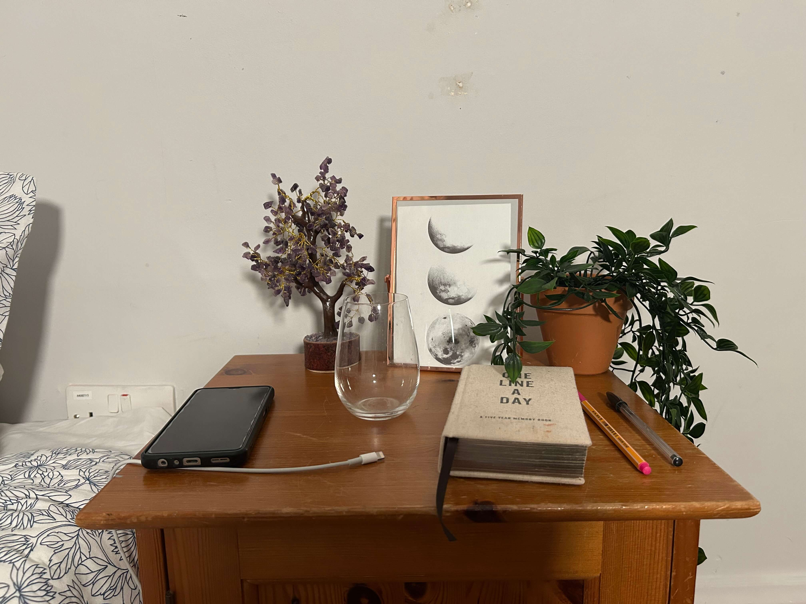

Bunting: I dressed the wall some handmade bunting. I imagined her making this to decorate her uni room which where the walls are probably blander than they would be at home.
Coat and Shoes: Most teenage rooms are always a bit messy so I felt like it seemed appropriate to have her shoes on the floor an her coat chucked on the bed where she left it.
Cabinet: I put a cabinet by the door as I felt like that is a useful place to store things but also put things down.
Backpack: I put a backpack by the door as I felt like that was a useful place to put it where she can grab it before she leaves for her lectures.
Notebook: Clutter in random places I feel is something common in teenage bedrooms so having a notebook just knocking around the room seems realistic.
Hairbrush: Similar to the notebook I like the idea of having clutter dotted around. Having a hairbrush by the door seems appropriate as she can quickly brush her hair before leaving. But it also feels like it is in the wrong place as it would make more sense for it to be by the mirror. So it looks like it has been quickly dumped there.
Wall Art: University walls are often quite bland so I put up some prints around her bed to decorate the wall

Blue Duvet Cover: I wanted to include blue and green tones in her bedroom as those colours remind me of the sea. One of Lucys favourite things to do when at home is go to the beach and I felt like this colour palette would remind her of home.
Dinosaur Jellycat: Jellycats are really on trend at the moment and lots of teenagers collect them. I imagine her and her friends having matching dinosaurs.
Laptop & Headphones: I wanted the bedroom to look lived in and I could imagine Lucy chilling out on her bed watching something on her laptop.
Crochet Cushion and Throw: With Lucy being a very creative person I wanted to reflect this in her bedroom. Therefore when dressing the bed with a throw and cushion I went for handmade crochet that she would have made.

Bedside Table: Bedside tables are the perfect place for clutter but also little trinkets that for a viewer help shape their view of the character style and aesthetic. As for clutter, there are often glasses, mugs and plates left lying around so it seemed appropriate to have an empty glass on the table. When it comes to trinkets, I liked the idea of having girly clutter. The things you do not really need but when you see in the shop you are like “awh that's cute” or things that just make the space feel a bit more lived in.
Journal: One Lucys favourite hobbies alongside art is journalling. It allows her to let out her emotions. I can imagine her writing in her journal every night before bed making it is place on the bedside table seem very appropriate.